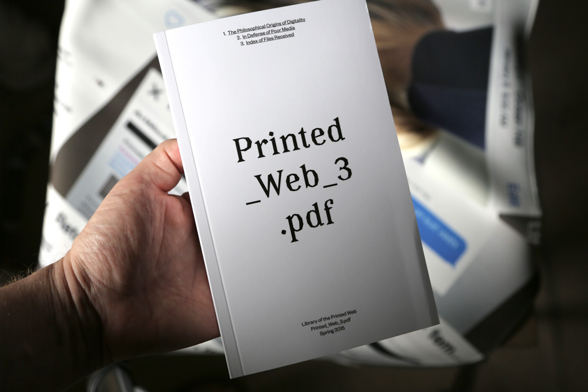
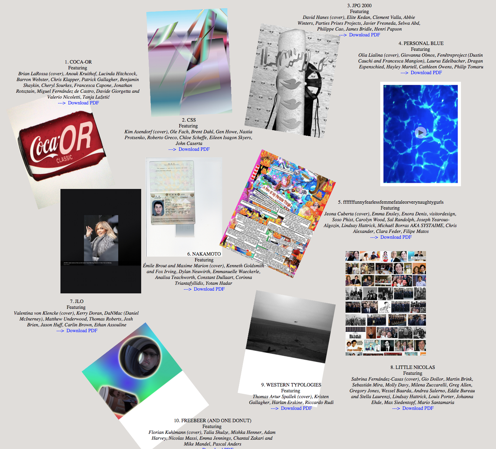
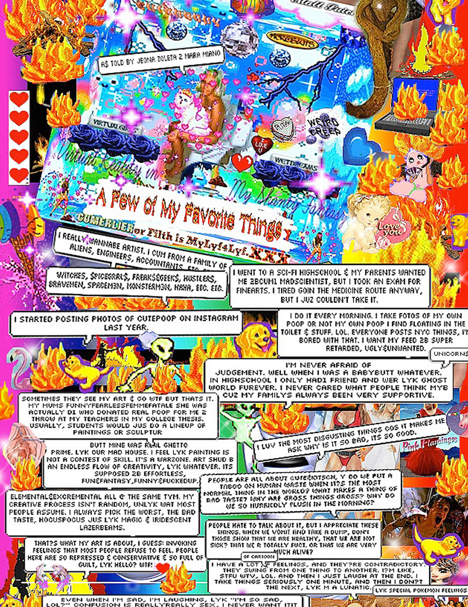
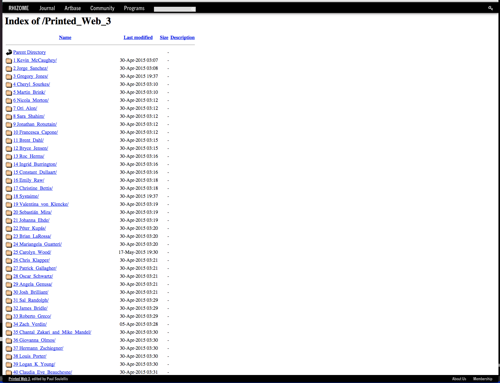

Printed Web 3 (2015)

Printed Web 3, Reader/Index
5 x 8 in.
388 pages
Paperback black-and-white print-on-demand book with uncoated cream-colored interior pages.
Published by Paul Soulellis, Library of the Printed Web
Open call: 147 artists (full list of contributors). Texts by Alexander Galloway, Silvio Lorusso.
Download PDF
Download all contributors’ files (1.5 GB ZIP) at archive.org
Browsable server directory at Rhizome.org
Purchase


Printed Web 3, Set of 10 Zines
Set of 10 zines
8.5 x 11 in.
24 pages each
Full color, matte softcover print-on-demand zines with thin, glossy interior pages. Unlimited edition.
Published by Paul Soulellis, Library of the Printed Web
Download ZIP of all 10 PDFs
Purchase
Contributors

Printed Web 3, Chinatown Edition
Hand-bound edition of 10
538 pages
6 x 9 in.
Full color, print-on-demand pages modified with hand-stitched binding, white hardcover and black foil stamping on spine. Wrapped in a thick neoprene PDF skin.
Published by Paul Soulellis, Library of the Printed Web
Foil-stamping and binding by Henry Bookbinding (135 Henry Street, NYC)
